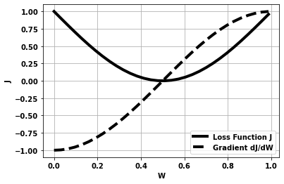
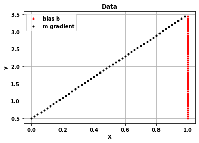
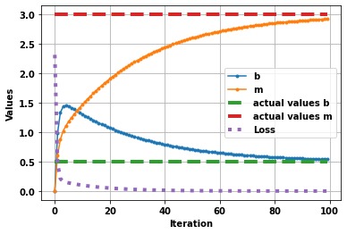
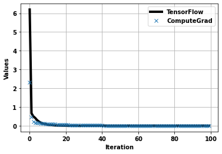

Gradient Descent
An optimization method in machine learning
Gradient descent is an algroithm used to determine the value of parameters that are used to map input variables to target variables. The steps are:
- Determine a loss function that relates predictions and actual values, i.e. a function that determines how good the predictions are
- N.B. the function needs to be of a form to encourage gradient descent
- Find the gradient of the loss function with respect to the parameters
- Update the weights based on this gradient
Gradient descent is not the only optimisation method to determine parameters but is an easy one to understand.
An Example
For example, in the figure below:
- if the weight W=0 then the Loss is 1 and the gradient is -1.0. In this case we’d want to increase the value of the weight W towards it’s minimum 0.5
- if the weight W=1 then the Loss is also 1 but the gradient is +1.0. In this case we’d want to reduce the value of the weight W towards it’s minimum 0.5
- if the weight W=0.5 then the loss is close 0 and so is the garient, in this case we wouldn’t want to change the weights by much
i.e. the weights can be updated by a formula of the form below to get the best fit:
\[W_{i+1} = W_i - const . \frac{dJ}{dW}\]
The maths
Some definitions.
Xare the input variablesYthe target variables- \(\hat{y}\) is the prediction
- The loss function
Jis what we are trying to minimise and is the sum of \({(Y-\hat{y})^2}\). For simplicity we’ll remove the summation below. mandbare the parameters we are looking to obtain
\(\hat{Y}= mX +b\)
\(Error = \hat{Y} - Y\)
\(J(m,b) = Error^2\)
\(Error = mX + b - Y\)
What we want to do is update m and b so that J is reduced and the predictions is better. That is for m we obtain a new value (1) from the previous one (0) as follows:
\(m_1 = m_0 - \frac{dJ}{dm} . \alpha\)
Where we have also included a learning rate (\(\alpha\)<1) to make the changes smoother.
So to improve the predictions of the model we need to find and . Which involves a bit of differentiation and rearanging as follows.
Chain rule for differentiation to find db and dm
\(\frac{dJ}{dm}\ = \frac{dJ}{dError}\ \frac{dError}{dm}\)
\(\frac{dJ}{db}\ = \frac{dJ}{dError}\ \frac{dError}{db}\)
from definition of J
\(\frac{dJ}{dError}\ = 2 . Error\)
from definition of Error
\(\frac{dError}{dm} = X\)
\(\frac{dError}{db} = 1\)
So
\(\frac{dJ}{dm} = 2 . Error . X\)
\(\frac{dJ}{db} = 2 . Error . 1\)
And to account for the summation we divide by the length of the array.
To allow for matrix multiplication we create X as a matrix of two vectors one with just ones and the 2nd part the original X. This then allows us to have one variable for the weights m and b that we are fitting to.
So for each iteration (K) the weights W (j are the different parts to the weights e.g. b and m) are updated. Noting that there are N observations (length of y is N) we get:
\(W_j^{K+1} = W_j^{K} - [\alpha . \frac{1}{N}\sum(\hat{Y}-Y).X_j]\)
The Problem
Ceate a simple problem whereby \(y=0.5 + 3.X\)
And hence create the variable X and y. To allow for matrix multiplication to a form \(y= bX + m\) we’ll also make X a matrix with ones in the first column. So we can use np.matmul
X = np.ones((50,2))
X[:,1]=np.arange(0,1,.02)
theta_act = [.5,3]
y = np.matmul(X,theta_act)
plt.plot(X[:,0],y,'.r')
plt.plot(X[:,1],y,'.k')
plt.grid(True)
plt.title('Data')
plt.legend(['bias b','m gradient']);
plt.xlabel('X')
plt.ylabel('y');
The Fit
Use the gradient descent iteration
theta_=np.array([0, 0])
thetaALL=[]; jALL=[]
iterTot=100
for _ in range(iterTot):
thetaALL.append( theta_ )
(deltaTheta, J) =computeGrad(X, y, theta_,learningRate=.5)
theta_ = theta_ - deltaTheta
jALL.append(J)
plt.plot(range(iterTot),thetaALL,'.-')
plt.plot(range(iterTot),np.ones((iterTot,2))*theta_act,'--',linewidth=4)
plt.plot(range(iterTot),jALL,':',linewidth=4)
plt.grid(True)
plt.legend(['b','m','actual values b','actual values m','Loss'])
plt.xlabel('Iteration')
plt.ylabel('Values');

With TensorFlow
We can do approximately the same thing with tensorflow: - input shape is 1 as the length 50 are treated as different inputs - one dense layer which is given by: - SGD or gradient descent - with a learning rate of 0.5 - and loss calculated by mean squared error - and fit over the same number of epochs = 100
model=tf.keras.Sequential([
tf.keras.layers.Input(shape=(1)),
tf.keras.layers.Dense(1)
])
model.compile(optimizer=tf.keras.optimizers.SGD(learning_rate=0.5),loss='mse')
model.summary()Model: "sequential_28"
_________________________________________________________________
Layer (type) Output Shape Param #
=================================================================
dense_32 (Dense) (None, 1) 2
=================================================================
Total params: 2
Trainable params: 2
Non-trainable params: 0
_________________________________________________________________XX=tf.reshape(X[:,1],(len(y),1))
yy=tf.reshape(y,(len(y),1))
history = model.fit(X[:,1],y,epochs=100,verbose=0)
plt.plot(history.history["loss"],'-k',linewidth=4)
plt.plot(range(iterTot),jALL,'x',linewidth=4)
plt.grid(True)
plt.legend(['TensorFlow','ComputeGrad'])
plt.xlabel('Iteration')
plt.ylabel('Values');
print(f"Predictions: m is {model.get_weights()[0][0][0]:.4f} and b is {model.get_weights()[1][0]:.4f}")Predictions: m is 3.0000 and b is 0.5000